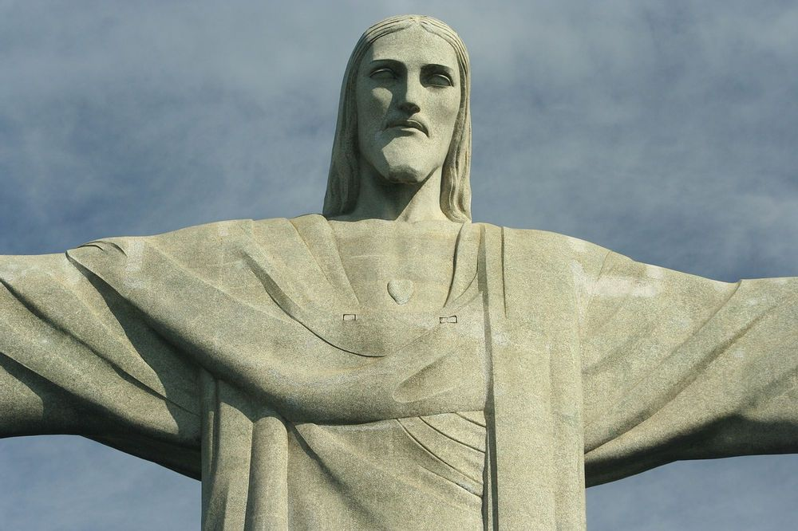

Статуя Христа-Искупителя (Cristo Redentor) — одна из самых знаменитых достопримечательностей Бразилии и всемирно признанный символ Рио-де-Жанейро. Статуя расположена на горе Корковадо (Corcovado) в Национальном парке Тижука, на высоте 710 метров над уровнем моря. Это одна из самых больших статуй Иисуса Христа в мире, её высота составляет 30 метров, а с учётом пьедестала — 38 метров. Статуя была открыта 12 октября 1931 года и с тех пор стала символом не только Рио-де-Жанейро, но и всего христианства. Статуя была построена благодаря усилиям католической церкви, а также с помощью множества добровольных пожертвований. Проект был разработан французским скульптором Польем Ландовски, а строительство велось бразильским инженером Хилио Пинту. Строительство заняло почти 10 лет и завершилось в 1931 году. Статуя Христова Искупителя изображает Иисуса Христа, распростёртого на кресте, с руками, вытянутыми в стороны, что символизирует его благословение и открытость к всему миру. Христос-Искупитель является не только религиозным символом, но и архитектурным чудом. Она сделана из железобетона и облицована мозаичными плитками, а её масштаб и величие можно увидеть с разных точек Рио-де-Жанейро. Статуя является частью Национального парка Тижука, который включает в себя тропические леса, что делает её посещение ещё более захватывающим. Статуя стала мировым символом Бразилии и часто появляется в фильмах, на фотографиях и рекламных материалах. Она также была признана одним из новых чудес света в 2007 году в рамках голосования, организованного в Интернете. Сегодня это место — важная туристическая достопримечательность, привлекающая миллионы туристов ежегодно. С вершины горы Корковадо открывается невероятный вид на Рио-де-Жанейро, бухту Гуанабара, пляжи Копакабана и Ипанема, а также на знаменитую гору С Sugarloaf.